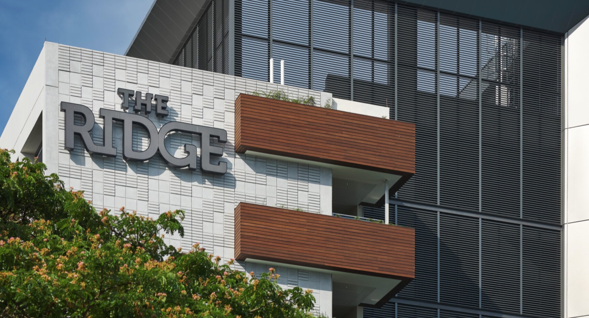

Shaw Foundation Alumni House
11 Kent Ridge Drive, Singapore 119244, on the National University of Singapore's Kent Ridge campus.
Changi AirportSingapore cityNUS Kent RidgeSFAH
 Travel & stay
Travel & stayPlan your arrival, campus transport, accommodation, and time beyond the scientific programme.
11 Kent Ridge Drive, Singapore 119244, on the National University of Singapore's Kent Ridge campus.

The Ridge is the preferred accommodation for eligible invited ISMPC2027 delegates. This dedicated NUS guest property is on campus, and the conference welcome reception will be held here.

Near Buona Vista MRT and the one-north district, with onward public transport to NUS.
Official website
A serviced residence near one-north MRT, suitable for delegates who prefer a flexible stay.
Official website
A full-service hotel south of campus with taxi and public-bus connections to NUS.
Official websiteThe organizers do not control rates or availability at alternative hotels. Please verify current terms directly with each property before booking.
The simplest option with luggage. Enter the full destination rather than only “NUS”:
Kent Ridge MRT (Circle Line) is the main rail gateway to the campus. Continue by NUS Internal Shuttle Bus, public bus, taxi, or private hire.
From Kent Ridge MRT, NUS shuttles connect to stops within walking distance of The Ridge.
Changi Airport is connected to the city by MRT, taxi, and private-hire services. Public transport is economical but requires transfers for NUS.
Entry requirements depend on nationality and travel document. Confirm the latest requirements with Singapore's Immigration & Checkpoints Authority.
ICA visa informationEligible travellers must submit the SG Arrival Card within the official submission window before arrival. It is not a visa.
Official SG Arrival CardCheck passport validity, entry conditions, and health or customs requirements close to departure because rules can change.
Entering SingaporeAn evening cruise is being planned as an informal setting for conversation and networking along Singapore's waterfront. The confirmed date, boarding location, and participant arrangements will be announced in the final programme.


Waterfront architecture, museums, and evening skyline views in the city centre.

Conservatories, Supertrees, and waterfront gardens beside Marina Bay.

A UNESCO World Heritage Site with tropical landscapes and the National Orchid Garden.